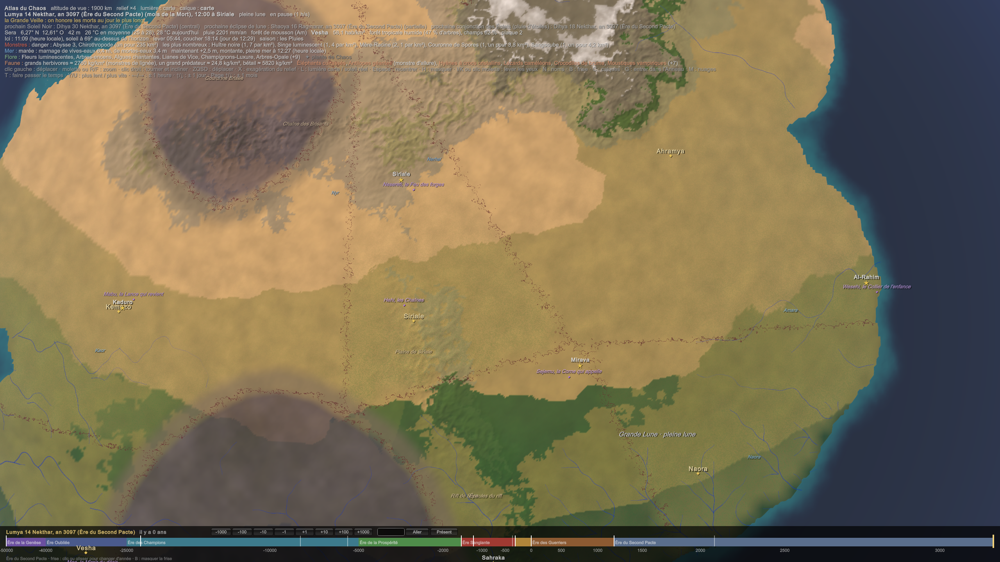

MAG-008 — Catalogue des Artefacts
Ce qui est posé (MAG-007 Les Artefacts et les pseudo-artefacts) :
- les Artefacts datent des premiers millénaires, du début des mortels jusqu'avant l'Ère des Champions (≈ −50 000 à −25 000) ;
- chacun est né d'un désir cru et simple, qu'il accomplit à la lettre, et on ne peut pas le détourner ;
- son créateur y a laissé une part de son concept, et en est souvent mort ;
- beaucoup ont été trouvés et étudiés par Tamaati, dont les ruines, sous Khal'daras, sont la plus grande source ; les grandes tribus de Khodom en gardent d'autres, au Conseil des Artefacts ;
- quelques centaines sont connus.
Une règle pour tout le catalogue : un Artefact boit le Chaos du lieu. Un objet ne peut pas tenir un feu pendant 40 000 ans sur sa seule réserve. Quand son désir est appelé, l'Artefact tire l'énergie du Chaos qui l'entoure, sans glyphe et presque sans perte. Près d'un territoire, il est puissant ; loin, il s'endort. C'est pourquoi beaucoup d'Artefacts ne se réveillent qu'aux lisières, et pourquoi le Chaos dilué d'aujourd'hui les a rendus plus faibles qu'aux premiers millénaires.
Les noms sont en Logar, tirés de l'Auréen. Chaque fiche donne le désir d'origine, ce que l'Artefact fait à la lettre, qui le garde aujourd'hui, et le malheur qu'il a causé.
1. Les Artefacts des peuples
Neseteba, le Siège des morts
- Le nom : « le siège des âmes » (nest, le trône ; ba, l'âme).
- Le désir : que mon peuple ne meure jamais.
- Ce qu'il fait : les morts de la tribu ne partent pas. Leurs âmes restent prises dans le siège, et l'on peut les entendre en s'y asseyant. Aucun mort de la tribu n'est jamais devenu un Spectral, et aucun n'est jamais allé vers Ankh.
- Qui le garde : la tribu des Pachydermes, en Khodom, la plus vieille mémoire du Conseil des Artefacts. Leur matriarche s'y assoit pour consulter des milliers d'ancêtres.
- Le malheur : les morts gouvernent. Une tribu qui écoute 40 000 ans d'ancêtres ne change jamais d'avis.
- Inspiration : le Tabouret d'or des Ashanti, qui garde l'âme de la nation ashanti.
Ishedi, l'Arbre des Confluences
- Le nom : « l'arbre sacré » (ished, l'arbre d'Héliopolis sur les feuilles duquel on écrivait les noms des rois).
- Le désir : que mon arbre vive toujours.
- Ce qu'il fait : un baobab qui ne meurt pas, ne vieillit plus et repousse de toute blessure, depuis plus de 30 000 ans.
- Qui le garde : personne, et tout Khodom. Les Confluences se tiennent sous ses branches : c'est le seul lieu neutre du continent. Kélia le tient pour sacré.
- Le malheur : il boit le Chaos de toute la plaine pour vivre. Autour de lui, rien d'autre ne pousse, et le désert gagne d'un pas par génération.
Sejemu, la Corne qui appelle
- Le nom : « Écoute ! » (sedjem, entendre).
- Le désir : que les bêtes viennent à moi.
- Ce qu'il fait : quand on en sonne, toutes les bêtes et tous les monstres qui l'entendent viennent au sonneur, quoi qu'ils soient.
- Qui la garde : le Cercle des Grands Chasseurs de Naora. Elle sert une fois par génération, pour une grande chasse.
- Le malheur : un apprenti l'a sonnée au bord d'un territoire. Le village a disparu en une nuit ; on a retrouvé la corne au milieu des os, intacte.
Hesi, le Balafon des Diseurs
- Le nom : « le chant » (hesi).
- Le désir : que l'on m'écoute.
- Ce qu'il fait : tant qu'on en joue, tous ceux qui l'entendent écoutent, et ne peuvent rien faire d'autre.
- Qui le garde : une famille de Diseurs, de père en fils, depuis des millénaires ; elle n'en joue qu'aux couronnements et aux traités.
- Le malheur : un Diseur qui joue trop longtemps tient une foule immobile. On raconte des sièges gagnés par un balafon, et des foules mortes de soif en l'écoutant.
- Inspiration : le Sosso Bala, le balafon gardé par la famille des griots Kouyaté depuis le XIIIᵉ siècle, au Mali.
2. Les Artefacts des royaumes
Nesereti, le Feu des forges
- Le nom : « la flamme » (nesert).
- Le désir : que ce feu ne s'éteigne jamais.
- Ce qu'il fait : un feu qui brûle sans bois, depuis 40 000 ans, et que rien n'éteint : ni l'eau, ni le sable, ni le fer.
- Qui le garde : Siriale. Les Grandes Forges sont bâties autour de lui : ce sont les « artefacts ancrés dans les grandes forges » de ta source. Le feu ne se déplace pas ; la ville est venue à lui.
- Le malheur : on ne peut pas l'éteindre, même quand il le faudrait. Il a déjà brûlé deux fois la ville basse.
Wejati, l'Œil des approches
- Le nom : « l'œil intact » (wedjat, l'œil d'Horus).
- Le désir : que je voie mon ennemi venir.
- Ce qu'il fait : il montre tout ce qui approche avec une intention hostile, de très loin. Il ne montre pas l'avenir, seulement le présent lointain.
- Qui le garde : la Grande Matriarche Prophétesse de Zun'khel. Elle sait ce qu'il montre ; son peuple croit qu'elle voit l'avenir. Une bonne part de sa réputation vient de cet œil.
- Le malheur : il montre aussi les ennemis de l'intérieur. Plus d'une Prophétesse a vu venir son propre fils.
Kebehi, la Coupe sans soif
- Le nom : « l'eau fraîche » (qebeh, la libation).
- Le désir : que je n'aie plus jamais soif.
- Ce qu'il fait : qui boit dans la coupe n'a plus jamais soif. Pas d'eau en plus : plus de soif.
- Qui la garde : le Khal Mystique de Zun'khel, l'autre tête du royaume. Les deux couronnes ont chacune leur Artefact.
- Le malheur : ceux qui y ont bu meurent desséchés sans s'en apercevoir. Le Khal y fait boire les traîtres : c'est la plus douce des exécutions.
Mabu, la Lance qui revient
- Le nom : « le harpon » (mꜥbꜣ).
- Le désir : que ma lance revienne toujours dans ma main.
- Ce qu'il fait : lancée, elle revient dans la main de celui qui l'a lancée, à travers tout ce qui se trouve sur son chemin, chair, bois ou pierre.
- Qui la garde : les rois de Kemazo. Elle passe au nouveau roi le jour du couronnement .
- Le malheur : on ne peut pas s'en débarrasser. Un roi qui l'a jetée à la mer l'a reçue en pleine poitrine à travers la coque de son navire.
Meheti, la Jarre de pluie
- Le nom : « la crue » (mehet).
- Le désir : qu'il pleuve sur mon champ.
- Ce qu'il fait : partout où on la pose, il pleut, sans arrêt.
- Qui la garde : on dit qu'elle est au fond du Lac Sheibu, à Arhamya. Le lac sacré, « miroir des émotions », serait le champ de son créateur, noyé depuis 40 000 ans. (Proposition : une légende des temples, que personne n'a vérifiée.)
- Le malheur : le champ, la ferme, le village.
Wesehi, le Collier de l'enfance
- Le nom : « le grand collier » (wesekh).
- Le désir : que mon enfant reste avec moi.
- Ce qu'il fait : celui qui le porte ne vieillit plus, et ne grandit plus. Ni le corps, ni l'esprit.
- Qui le garde : il est scellé dans le grand temple d'Sheibu, à Arhamya. Le dernier qui l'a porté était un enfant ; on ne sait plus s'il est vivant.
- Le malheur : des enfants de trois ans pendant des siècles.
3. Les Artefacts des ruines et des abîmes
Saba, le Seuil
- Le nom : « la porte » (sba).
- Le désir : que personne ne franchisse ce seuil.
- Ce qu'il fait : une porte de pierre que nul ne passe, ni dans un sens ni dans l'autre. Ni homme, ni monstre, ni dieu.
- Qui le garde : il est dans les ruines de Tamaati, sous Khal'daras. Son créateur avait voulu protéger sa ville ; la ville est restée enfermée derrière, avec ses habitants.
- Le malheur, et ce qu'il a donné : Tamaati l'a étudié pendant des siècles. Le glyphe de la porte scellée est né de cette étude (MAG-006 Catalogue des sorts § 7) : c'est le pseudo-artefact le plus réussi jamais tiré d'un Artefact.
Hesemeni, le Moulin à sel
- Le nom : « le natron, le sel » (hesmen).
- Le désir : que mon peuple ne manque jamais de sel.
- Ce qu'il fait : il moud du sel, sans fin.
- Qui le garde : personne. Il est au fond de la Mer de Tawurt, depuis qu'un bateau qui l'emportait a coulé sous son poids de sel. (Proposition : c'est lui qui rend cette mer plus salée que les autres, et qui nourrit les salines dont vivent les Nkaras.)
- Le malheur : une mer qui sale lentement.
- Inspiration : le moulin Grótti des légendes nordiques, qui moud du sel au fond de la mer et explique pourquoi la mer est salée.
Sepedi, le Clou des menteurs
- Le nom : « le pointu » (seped).
- Le désir : que nul ne me trompe.
- Ce qu'il fait : une figure de bois hérissée de clous. Qui ment devant elle saigne, comme si un clou le perçait.
- Qui le garde : le tribunal des Nkaras, à Tawurt, sous le Gardien. Ils l'ont trouvée près de la Porte.
- Le malheur : elle ne distingue pas le mensonge de l'erreur. Celui qui se trompe saigne aussi. C'est l'inverse du serment, qui punit le mensonge et épargne l'erreur sincère.
- Inspiration : les nkisi nkondi du Kongo, des figures percées de clous, devant lesquelles on scellait les serments.
Kesu, les Os qui répondent
- Le nom : « les os » (qesu).
- Le désir : que mes morts me répondent.
- Ce qu'il fait : un crâne qui répond aux questions. Mais seulement avec la voix et le savoir des morts de son créateur, des gens qui vivaient il y a 40 000 ans.
- Qui le garde : les chamans de Naora, qui l'interrogent sur le monde d'avant.
- Le malheur : il ment sans le savoir : il répond avec un savoir mort depuis 40 000 ans.
Hehi, les Chaînes
- Le nom : « l'infini, les millions » (heh).
- Le désir : qu'il ne puisse jamais partir.
- Ce qu'il fait : des chaînes qui retiennent ce qu'elles lient, pour toujours.
- Qui les garde : personne ne les a vues. On dit qu'elles retiennent quelque chose au fond du Gouffre de Nyara, que Siriale garde et dont elle interdit l'entrée. (Proposition : une légende, que le bestiaire pourra un jour expliquer.)
- Le malheur : si un jour elles cèdent.
Shenu, le Voile
- Le nom : « ce qui entoure » (shen, l'anneau qui protège un nom).
- Le désir : qu'on ne me trouve pas.
- Ce qu'il fait : celui qui le porte n'est pas invisible ; personne ne pense à le chercher.
- Qui le garde : on ne sait pas, par définition. Le DarkDen dit qu'il a été vu à Vesha, il y a deux siècles.
- Le malheur : son créateur ne s'en est jamais défait. Ses proches ne l'ont jamais cherché, ni à sa mort.
Maa, le Miroir du désir
- Le nom : « Vois ! » (maa, voir).
- Le désir : que je voie ce que je désire.
- Ce qu'il fait : il montre l'objet du désir de celui qui s'y regarde. Pas où le trouver : seulement ce qu'il désire.
- Qui le garde : la famille Luréas, à Vesha, dans le casino royal. On paie très cher pour s'y regarder une minute.
- Le malheur : on ne s'en détache pas. Les Luréas gardent un salon de gens qui sont morts devant lui.
- Inspiration : les miroirs de Mami Wata, l'esprit des eaux d'Afrique de l'Ouest.
Dans l'Atlas
Les quatorze Artefacts qui ont un lieu sont sur la carte : un losange violet et leur nom, visibles en dessous de 4 500 km d'altitude. Quand la souris passe à moins de 80 km de l'un d'eux, la ligne « Artefact » donne son désir et son gardien. Le Siège des morts et l'Arbre des Confluences sont placés dans la savane de Khodom ; le Voile et les Os, sans lieu fixe, restent hors de la carte.

Liens
MAG-007 Les Artefacts et les pseudo-artefacts · MAG-006 Catalogue des sorts · CIV-023 Les peuples hors de Sera · CIV-018 Les arts, les jeux et les récits · CIV-012 Le pouvoir et la loi · CIV-009 Tamaati · BIO-008 Les Lumas, tribu par tribu